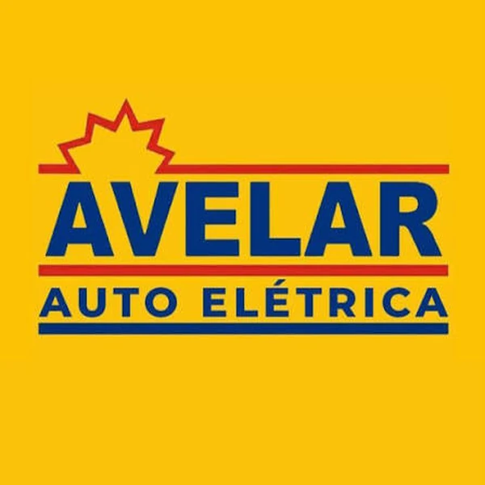
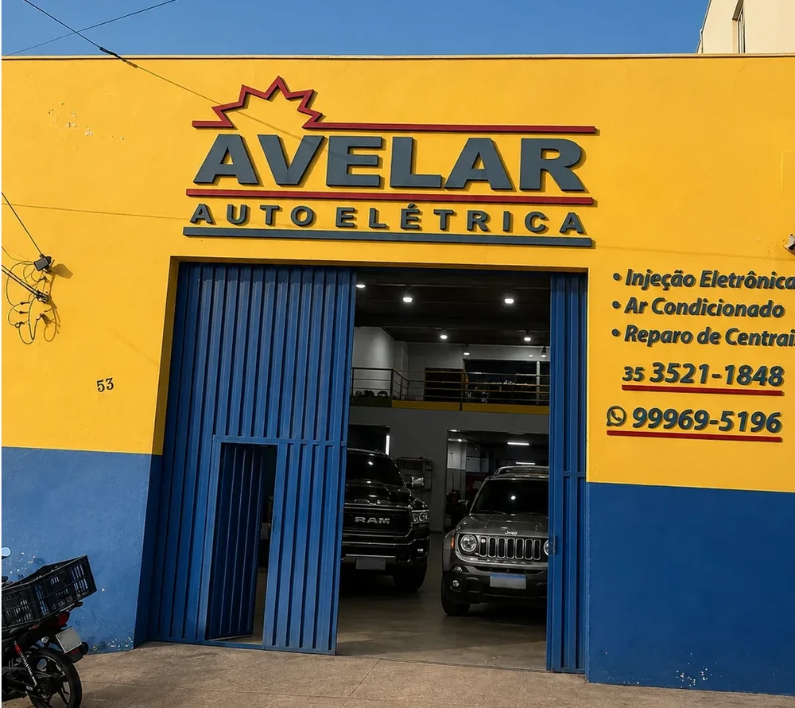
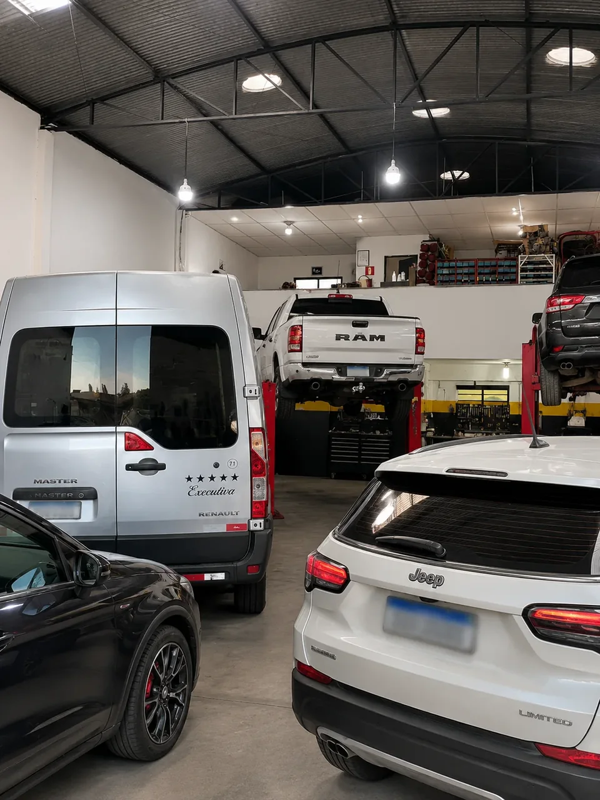
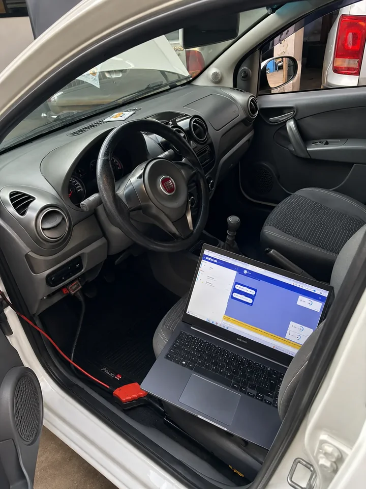
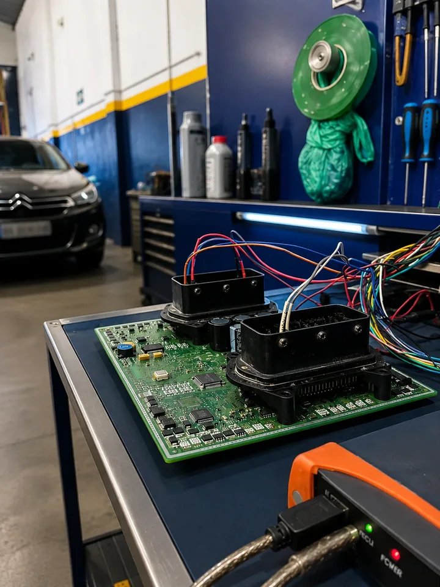
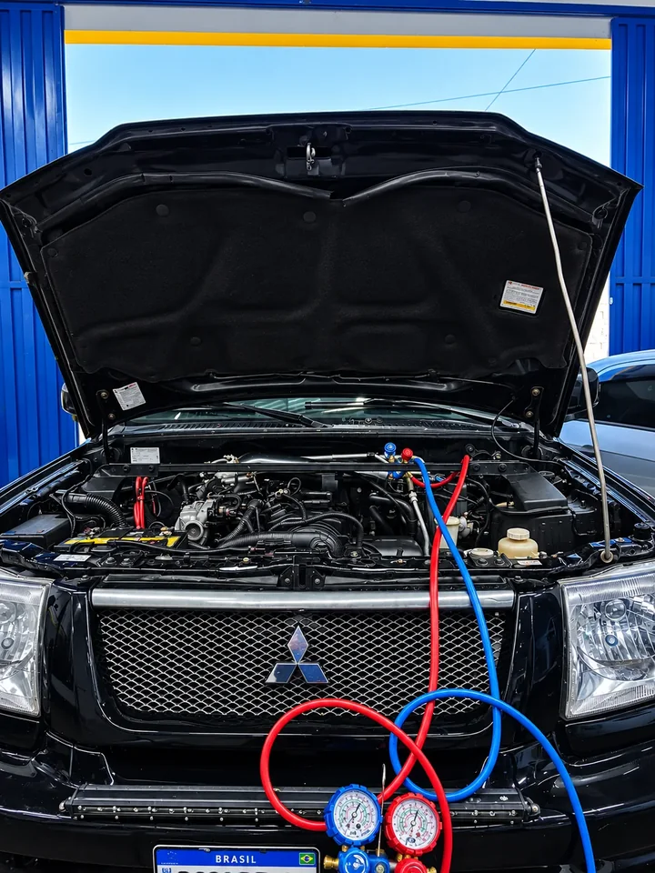
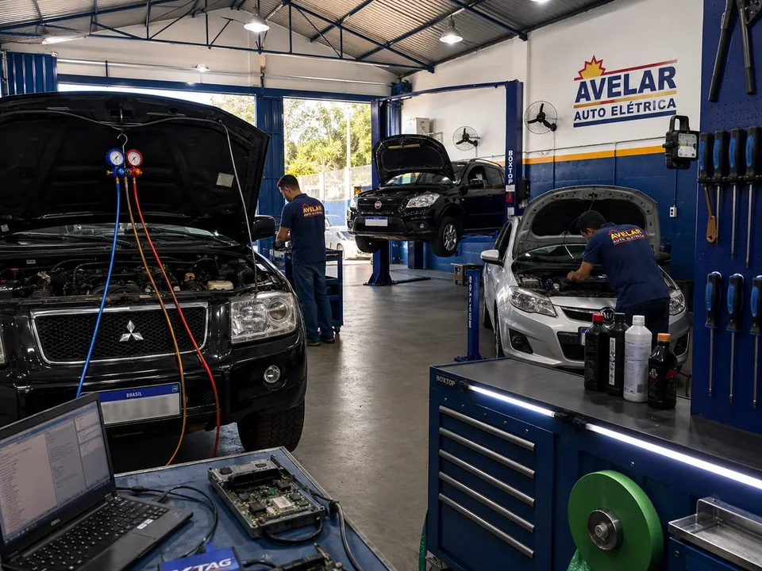

Auto elétrica e eletrônica • Passos–MGTradição para cuidar.Tecnologia para diagnosticar.
A Avelar conecta o diagnóstico no veículo à análise eletrônica na bancada. Elétrica, injeção, climatização e módulos para quem precisa entender a falha e encontrar uma solução.


Entender o sintoma.
Confirmar a causa.
Um código de falha é o começo da investigação. Scanner, medições e testes ajudam a identificar o que acontece no sistema antes de decidir pelo reparo.
- 01
Ouvir e conhecer o veículo.
Modelo, ano, motorização e comportamento orientam a triagem.
- 02
Medir e testar.
Alimentação, sinais e comunicação ajudam a separar a causa das consequências.
- 03
Executar a solução.
Com a falha confirmada, o atendimento segue para o reparo, ajuste ou substituição necessária.
Precisão em diferentes sistemas.
Do automóvel às linhas pesada e agrícola, cada aplicação pede conhecimento do veículo e do sistema em análise.

Elétrica e injeção.
Leitura e testes para investigar falhas no funcionamento do veículo.
Conhecer serviços ↗
Módulos eletrônicos.
Inspeção, leitura e análise de centrais além do scanner.
Conhecer o trabalho ↗
Ar-condicionado.
Diagnóstico e atendimento ao sistema de climatização automotiva.
Ver atendimento ↗
Pesada e agrícola.
Elétrica e eletrônica para veículos e máquinas de trabalho.
Conhecer aplicações ↗Conte o sintoma antes de vir.
Envie os dados do veículo para a triagem inicial. A oficina fica na Rua dos Caiçaras, 53, em Passos–MG.
Conheça os serviços, a oficina e os canais de atendimento.
Site oficial →